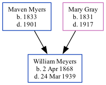

William Meyers 1868 - 1939
[ Home ] | [ Calendar ] | [ Surnames Index ] | [ Family History ]The 5th of 7 children of Maven Myers (a coal miner) and Mary Gray, William Meyers was born in Archbald, Lackawanna, Pennsylvania, USA on Apr 2, 18681,2.
Throughout his life, he lived at his birthplace on Jun 1, 18802 and on Jun 1, 19001.
He died on Mar 24, 1939 in Blakely, Lackawanna, Pennsylvania, USA.
Parents
- Maven was born in 1833
- Mary was born in 1831
Citations
- US Census 1900 - Findmypast (was the son of the head of the household)
- Us Census 1880 - Findmypast (was age 12 and the son of the head of the household)
Media
US Census 1900 - USC/1900/004115104/00007/029
Family Tree
Generated by Ged2Site. Last updated on Jul 20, 2025